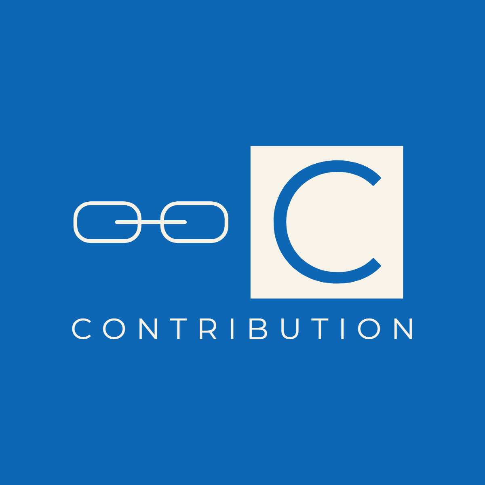
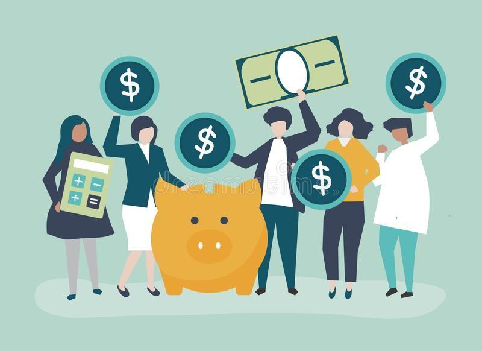
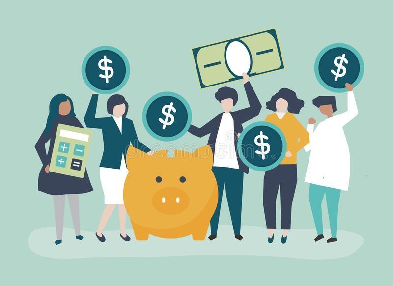
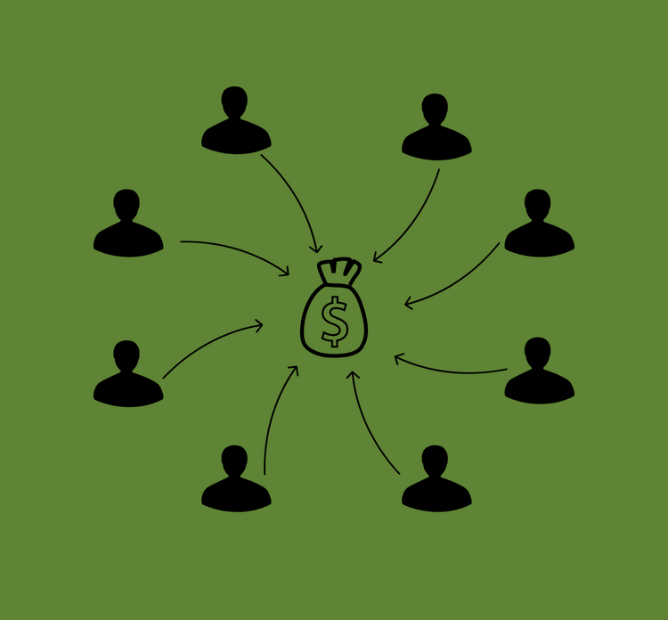
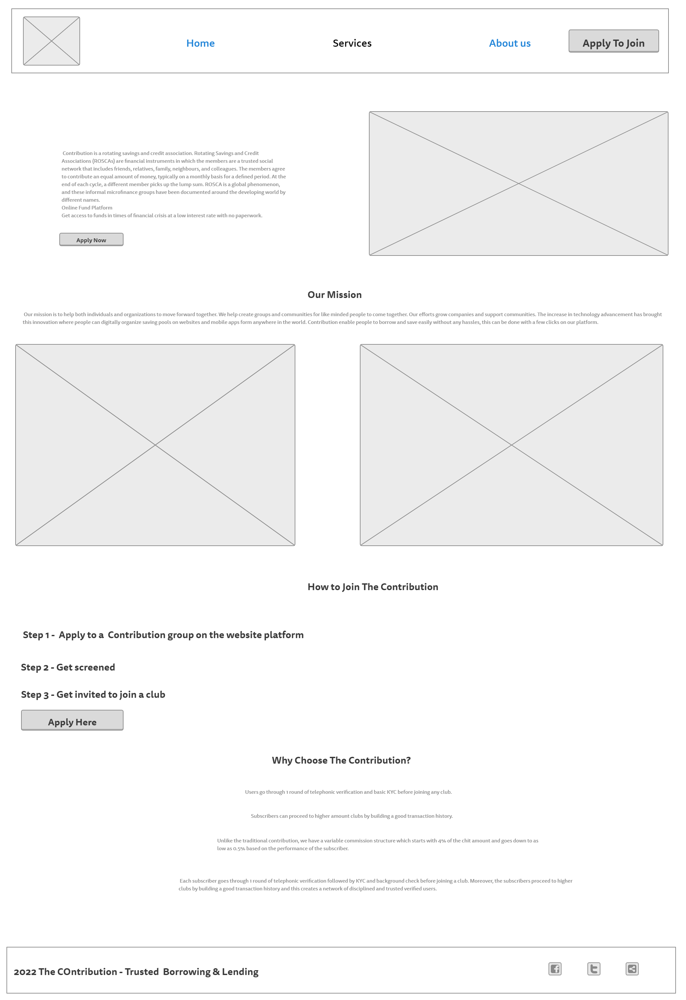
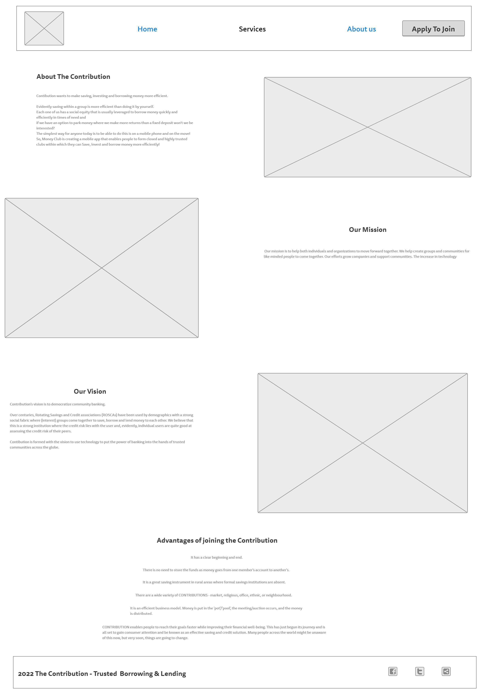
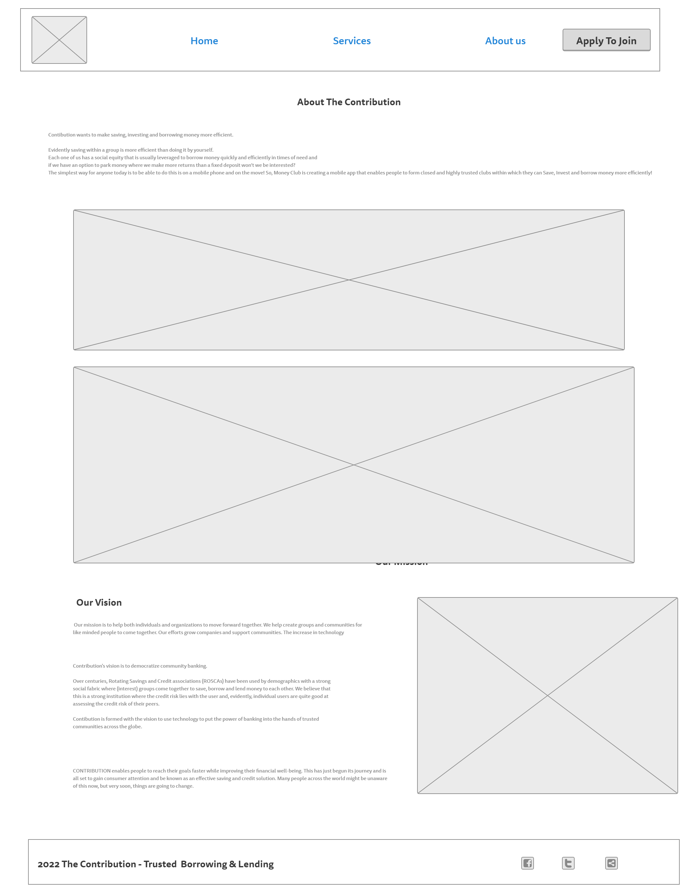

Overview
Purpose
Contribution is a benefactor. This platform enables people to come together, contribute as individuals, groups, communities and even companies. This will bring people together, to connect groups, communities and companies with a common goal. Have you been in a contribution online? Have you formed a group with like minds with a goal to help each other online? Have you been in an online platform that accommodates groups who want to contribute to help a community or carry out a service? Contribute with us for we rise by lifting others. Let's move forward together!
Audience
Target audience
- Companies
- Business men
- Business women
- coorporate organiztions
- Small business owners
- large business owners
- salary earners
Branding
Website Logo
Style Guide
Color Palette
Palette URL: https://coolors.co/152238-silver-36454f-white| Primary | Secondary | Accent 1 | Accent 2 |
|---|---|---|---|
| [#152238] | [silver] | [#36454f] | [white] |
Typography
Heading Font: IM Fell French Canon SC
Paragraph Font: Lato
What We Do
Contribution is a rotating savings and credit association. Our mission is to help both individuals and organizations to move forward together. We help create groups and communities for like minded people to come together. Our efforts grow companies and support communities.
Services we render
We are the platform, you are the organizers. We would be with you every step of the way to ensure that you are successful in creating groups and clubs every step of the way. We help you gather a group of people to each contribute a set amount of money on a regular basis to a pool. That pool of money is paid out, also on a regular either weekly, monthly or yearly basis according to your needs, to each member in turn. Once all have availed themselves of the money, the group either ends or starts another round.
Navigation
Site Map
Content
Home page
Contribution is a rotating savings and credit association. Rotating Savings and Credit Associations (ROSCAs) are financial instruments in which the members are a trusted social network that includes friends, relatives, family, neighbours, and colleagues. The members agree to contribute an equal amount of money, typically on a monthly basis for a defined period. At the end of each cycle, a different member picks up the lump sum. ROSCA is a global phenomenon, and these informal microfinance groups have been documented around the developing world by different names. In India and Pakistan, it’s called committee or chit fund, Susus in Southern Africa and the Caribbean, Ekub in Ethiopia, Seettuva in Sri Lanka, Tanomoshi-ko or Mujin in pre-1945 Japan, Tontines in West Africa, Arisan in Indonesia, Wichin Gye in Korea, Xitique in Mozambique and Djanggis in Cameroon, and likelembas in the Democratic Republic of the Congo. We call it CONTRIBUTION.
Our mission
Our mission is to help both individuals and organizations to move forward together. We help create groups and communities for like minded people to come together. Our efforts grow companies and support communities. The increase in technology advancement has brought this innovation where people can digitally organize saving pools on websites and mobile apps form anywhere in the world. Contribution enable people to borrow and save easily without any hassles, this can be done with a few clicks on our platform.
Images for the Home page
 

Services
We are the platform, you are the organizers. This platform guarantees to would be with you every step of the way to ensure success. We help you gather a group of people to each contribute a set amount of money on a regular basis to a pool. That pool of money is paid out, also on a regular either weekly, monthly or yearly basis according to your needs, to each member in turn. Once all have availed themselves of the money, the group either ends or starts another round. We help provide access to funding to individuals who might not have access to the banking system, Contribution have the added benefit of accountability. Group organizers can help make keeping a commitment easier. This includes making a commitment on how to use their withdrawal. Our meetings are opportunities for networking while focusing on how to achieve each group's financial goal. We offer a rotating saving scheme that can be a reliable source of funds in emergencies and otherwise. This service would be online. You can now complete all the formalities of joining Contribution in the luxury of your home.
- Online Application - Online enrollment form for subscribers.
- Enquiries - Subscribers can make any specific enquiry here.
- Complaints / Suggestions - Subscribers can tell their specific request here.
Images for the Page 2

About Contribution
Contribution wants to make saving, investing and borrowing money easy. We know that saving within a group is more effective that saving alone and that is why we have come up with this Idea. The goal is to create a network of saving pools that all may move forward together.
If we have an option to get money where we make more returns than a fixed deposit would we not be interested? The simplest way for anyone today is to be able to do this is on a web platform and on the move! So, Contribution is creating a website that enables people to form closed and highly trusted clubs within which they can Save, Invest and borrow money more efficiently!
The concept of The Contribution concept is well-known and practised all over the world. But how exactly does it work? In a CONTRIBUTION, members contribute their money into a common fund. Usually, cONTRIBUTIONS are structured around monthly contribution. A member takes the money collected as a lump sum at the beginning of each cycle. This cycle continues for as long as the group exists. CONTRIBUTION operate by either: Giving the total money to the individual who is in need. One can receive the pot just once. Conducting a lottery. Those members who already received their payouts are excluded from the lottery. Bidding. The members who want the money bid to take the amount home.
Advantages of CONTRIBUTION It has a clear beginning and end. There is no need to store the funds as money goes from one member's account to another's. It is a great saving instrument in rural areas where formal savings institutions are absent. There are a wide variety of CONTRIBUTIONS - market, religious, office, ethnic, or neighbourhood. There is transparency due to group regulation. It is an efficient business model. Money is put in the 'pot'/'pool', the meeting/auction occurs, and the money is distributed. It can be tailored to the income of the group. The savings of many are collected to form a lump sum, which one person can use it to pay school fees buy household durables, home repairs, cover unplanned expenses and medical emergencies. CONTRIBUTION enables people to reach their goals faster while improving their financial well-being. This has just begun its journey and is all set to gain consumer attention and be known as an effective saving and credit solution. Many people across the world might be unaware of this now, but very soon, things are going to change.
Images for the Page 3
Wireframes
Create three wireframes for your site. One for each page and list them here
Home
[Any additional details about home that the wireframe does not make clear]
Services
[Any additional details about page 2 that the wireframe does not make clear]
Contact Us
[Any additional details about page 3 that the wireframe does not make clear]
